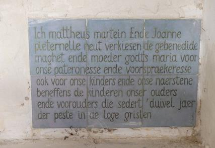
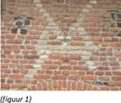
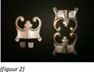
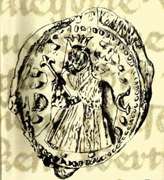

Erkelenz (Nederlands: Erkelens)
- een plaats in de DuitsedeelstaatNoordrijn-Westfalen,
gelegen in het Kreis Heinsberg - wordt het oord
van onze Ontmoetingsdag
2014. Noteer alvast de datum van 11 oktober. Alle
praktische gegevens volgen in de Nieuwsbrief 4/2014 die u eind
september aan krijgt.
Nederlandse
tekst op de kerkmuur: "In den jaren ons heren MCCCCLVII des
eirsten dags nae sent peter ind pauwels dach toe IV uren
veil hie eyn tore ned ind des andere jairs op de selve dach
wart dese begoden weden"
Jaarboek De
Nederlanden ‘extra muros’ - 2014
Hierbij, bij wijze van voorproefje, het Ten
geleide van het in mei jongstleden verschenen nieuwe
ZANNEKIN-Jaarboek. Nieuw in deze editie zijn de talrijke
kleurenillustraties, die ons ‘visitekaartje’ bij de tijd
brengen. Mede door de opname van het register over de vijf
jongste jaarboeken deinde de omvang uit tot 224 pagina’s.
Bij wijze van kennismaking leest u hieronder een korte
inhoudsopgave.
Dit 36e Jaarboek De Nederlanden ‘extra
muros’ biedt andermaal een keur aan bijdragen over de
territoria die deel uitmaken van ons Nederlandse kijk op de
geschiedenis van onze territoria ‘extra muros’.
Als steeds stellen wij er prijs op het jaarboek in te
leiden met de klassieke tekst waarin uiteengezet wordt waar het
de Vereniging /Stichting Zannekin
uiteindelijk om te doen is, en in welk perspectief wij ook ons
jaarboek plaatsen.
Als blikopener is er de
geopolitieke kijk van de betreurde André
Belmans, die als geen ander geijverd heeft voor
een gezamenlijke toekomst van ons territoriaal erfgoed.
Volgen de bijdragen die
van ver of nabij handelen over de Franse - die wij verkiezen als de
Zuidelijkste - Nederlanden te benoemen: ze handelen
respectievelijk over Béthune (Jan van
Tongeren), de abdij van Gizene en Waten (Cyriel Moeyaert en Antoon Lowyck), Michiel de Swaen
(Camiel van Woerkum) en het
fort van Mariembourg (Ruud Bruyns).
Volgt, bij wijze van
scharnier, de bijdragen over Hoogstraten, de historische figuur
en de plaats die zijn naam draagt (Luc
Pauwels) en andermaal een luik gewijd aan de
verwante architectuurvormen binnen de Nederlanden en de
aangrenzende gebieden (Zeno Kolks).
Met de bijdragen rond de
sabelsleper Maarten Schenk (Renaat
Vanheusden) en de theoloog Ubbo Emmius (Marten Heida) komen ook de
oostelijke Nederlanden ‘extra muros’ volop aan bod.
Een apart maar evenzeer
grensoverschrijdend verhaal brengt Paul
van Hauwermeiren, dat handelt over de
kramertalen, zijnde het Bargoens van de destijds rondtrekkende
handelslieden, dat ons van West-Vlaanderen tot in het Rijnland
en nog verderop brengt.
Voorafgaand aan de
Kroniek en de boekrecensies leest u nog het summiere verhaal van
Leo Camerlynck over de
merkwaardige Zuid-Afrikaanse oorlogsgedenksite te Longueval, nu
in Picardië, doch ooit binnen de zuidelijkste Nederlanden.
Voor het eerst
verschijnt het jaarboek De
Nederlanden ‘extra muros’ met de meeste illustraties in
vierkleurendruk. Een extra-investering die hopelijk tot een
bredere lezersschaar leidt!
Extra bij dit jaarboek
is ook het overzichtsregister van de vijf vorige jaarboeken, dat
deze editie iets omvangrijker dan gewoonlijk maakt. Daaruit
leren we dat onze jaarboekenreeks tot einde 2013 niet minder dan
377 bijdragen (naast 221 boekrecensie) bundelde rond de
Nederlanden ‘extra muros’.
In hun geheel vormen ze
voorwaar een unieke documentatie over ons geestelijk en
nationaal erfgoed.
Onze hernieuwde en niet
geringe dank bij dit alles aan het adres van onze medewerkers,
temeer daar allen ‘pro deo’ bijdragen tot de uitstraling van ons
jaarboekenproject. Zonder hen hadden waren we voorwaar niet aan
deze 36e editie toegekomen!
Plattdeutsch
wird zum Unterrichtsfach an
27 Grundschulen in Schleswig-Holstein
Schon
nach den Sommerferien geht es los: An 27 ausgewählten
Grundschulen in Schleswig-Holstein wird dann zweimal in der Woche Plattdeutsch auf dem
Lehrplan stehen. Das Bildungsministerium will kommenden Woche mitteilen, um welche Schulen es
sich handelt. Nach Hamburg ist Schleswig-Holstein damit das
zweite Bundesland, in dem Platt unterrichtet wird. 44 Schulen
hatten sich im Norden beworben. „Wir sind erfreut über die große
Nachfrage und froh, dass wir jetzt ein verbindliches Angebot für
den Spracherwerb von Plattdeutsch an den Schulen haben“, sagte
gestern die Sprecherin des Plattdeutschen Rates in
Schleswig-Holstein, Marianne
Ehlers, am Rande der konstituierenden Sitzung in Molfsee bei
Kiel. Sie zeigte sich erleichtert, dass fast in allen Kreisen
des Landes Schulen zum Zuge gekommen seien und versprach, auch
die anderen Bewerber weiter zu unterstützen.
„In
den Schulen, in denen es Unterricht geben wird, wird es nicht
nur ums Lesen, Singen und Sketche spielen gehen“, sagte Heiko
Gauert, der Schleswig-Holstein im Bundesrat für Niederdeutsch
vertritt. Es gehe vielmehr darum, die Kinder in der
Sprachkompetenz zu fördern. Ziel sei es, dass sie nach Ende der
Grundschulzeit platt sprechen könnten und schreiben lernten. Die
Lehrer, die Platt unterrichten, gibt es bereits an den Schulen,
die alle ein Konzept eingereicht haben und nach einem vom
Bildungsministerium abgesegneten Leitfaden den Unterricht
gestalten. Dabei soll auf eine einheitliche Sprache geachtet,
regionale Unterschiede aber durchaus akzeptiert werden.
Von
einer Überforderung der Schüler will Ehlers nichts wissen. „Es
ist nie so leicht, Sprachen zu lernen, wie im Alter zwischen
drei und acht Jahren“, sagt die Referentin für Niederdeutsch
beim Schleswig-Holsteinischen Heimatbund. Ziel sei es, noch mehr
Schulen für das Plattdeutsche zu begeistern, um das
Plattdeutsche lebendig zu halten. Heiko Gauert hofft gar auf
eine Weiterführung des Platt-Unterrichts auch in den höheren
Schulen. Damit setze das Land das um, was schon seit Langem von
der EU beschlossen ist: dass Kinder zwei Fremd- und eine
Regionalsprache erlernen. Oder, wie der zweite Sprecher des
Plattdeutschen Rates, Klaus Nielsky, gern sagt: „Einsprachigkeit
ist heilbar.“
______________
Bron: Aus der Redaktion des
Holsteinischen Couriers vom 8 Mai 2014
Uit en over Frans-Vlaanderen
Cyriel
Moeyaert en Mark Ingelaere
* Sinds zowat een jaar brouwt
‘Brasserie du Pays Flamand’ in Blaringem een nieuw soort bier
dat de naam kreeg ANOSTEKE, dit is de algemeen bekende
afscheidsgroet van alle Frans-Vlamingen en betekent “Toet een
naoste keer” of tot de volgende keer. Je kunt over dit bier ook
nakijken op internet www.ANOSTEKE.com .
* Boven een garage vind je in
Stapel in een raampje onder een mooi volks beeld van een man en
eronder ongeveer hetzelfde opschrift. Hier is het goed verzorgd
en wordt het geregeld herschilderd.
* Onder leiding van Bernard
Dannoot van Rekspoede bezocht de groep “Vlaemsch klappen” op 25
mei het museum Het huis
van de Veldslag in Noordpene. Ze interesseerde zich voor
de geschiedenis van de veldslag maar ook voor het Vlaams dat je
daar kunt beluisteren met een koptelefoon. Het zijn verklarende
teksten goed en trouw uitgesproken door Jacques Delafosse,
Volkerinkhovenaar, Josiane Ryckebusch uit Bollezele en Bruno
Verhaeghe, Houtkerkenaar. Dezelfde groep is ook bij de Vlaamse
toneelopvoering in Ekelsbeke opgetreden met enkele goed gezongen
Vlaamse liederen. Op de foto staat Filip Ducourant de
conservator van het museum trots in hun midden.
* Op zondag 26 januari voerde
het Volkstoneel voor Frans-Vlaanderen in Ekelsbeke weer en
Vlaams stuk uit: ’t Kruus
van ‘n Coin Perdu. Ik had liever “Verloren Hoekje” zien
staan. Ook die dag trad een groep van ruim twintig mannen en
vrouwen tussen twee bedrijven op met Vlaamse liederen, dit keer
uit de Coussemakers Chants
populaires des Flamands de France. Er was ook een nieuw
lied bij “De Vlaamsche Tale”, heel geestdriftig gezongen. Zelfs
m’n voorbuurman in de zaal zong ijverig mee en hij bezat de
tekst ervan. We vroegen die maar hij kon die niet afstaan: hij
had er maar één. De maat werd geslagen door een flinke vrij
jonge Frans-Vlaamse vrouw.
* Op de helling van de Zwarte
Berg staat het kapelletje “Onze Lieve Vrouw van Vlaanderen”
(Notre Dame des Flandres), met binnenin het bekende beeld van
Onze Lieve Vrouw met aan haar voeten de Vlaamse Leeuw en het
Vlaamse leeuwenschild.
* In de Hossenaerestraete
tussen Link en Drinkham heeft een bakker een bestelwagen waarop
in grote letters VLANDEREN staat. Vlak in de buurt kun je in de
geveltop van een huis een Vlaamse Leeuw afgebeeld zien alsook
een huis met een Vlaamse Leeuwenvlag.
* In Sint-Pietersbroek hadden
we een sympathieke ontmoeting met Marcel Depauw. Die man spreekt
heel vlot z’n Vlaams en niet zonder humor. Hij is vroeger
metselaar geweest, hij heeft het huis gebouwd waarin z’n dochter
woont; hij is geboren in Rozendaal bij Duinkerke en woont nu in
Bray-Duinen. Toen we toevallig vroegen of hij kon zwemmen, zei
hij “lik e looten”, zoals iemand van lood.
* Tussen Wilder en Wormhout, in
de Pepers straete staat de kapel met het oude opschrift binnenin
“Ich Mattheus Martein ende Joanne Pieternelle Neut verkiesen de
gebenedide maghet ende moeder Godts Maria voor onze pateronesse
ende voorspraekeresse ook voor onse kinderen ende naestene
beneffens de kinderen onser ouders ende voorouders die sedert
duivel jaer der peste in de loge grislen” (Zie Nieuw Oud Vlaams, s.v
duivel jaer). In 1985 was die kapel gerenoveerd. en de
opschriften op tegels aangebracht die in de muur zitten. Maar nu
staat die kapel leeg en zonder deur. Ze moet nodig hersteld
worden. Ze dateert uit de eerste helft van de achttiende eeuw.
1847 geloof ik. De tekst is mysterieus en wijst terug op de
pest. Er is op andere tegels een Franse vertaling van de oude
tekst te lezen.
* In La Voix du Nord stond
te lezen: Duinkerke. Er wordt voorzien in een studie over een
verbinding van de oostelijke agglomeratie met een tramlijn die
het station van Duinkerke zou verbinden met het
communicatiecentrum van Leffrinkhoeke en het oosten van de
agglomeratie tot Bray-Duinen en die verder zou worden
doorgetrokken tot de steden Adinkerke en Veurne. Dit alles in
een logica van integratie en grensoverschrijding, zo zegt de
tekst in het besluit. Als me spreekt van logica dan kan het niet
anders dan een tram te kiezen op meterspoor, om de verbinding te
maken het de soortgelijke trams die in de deelstaat Vlaanderen
circuleren.

De
kapel tussen Wilder en Wormhout met het Nederlandstalige
opschrift, waarvan hoger sprake
* Wie het dorp Ekelsbeke
binnenkomt wordt op een bord langs de weg begroet met
“Wellekom”. Wie het dorp verlaat krijgt op een bord de wens
toegericht “Toet allicht”, d.i. “Tot binnenkort”. Het
Frans-Vlaams ‘allicht’ is in het West-Vlaams ‘allichte’.
* In het nieuwste Bulletin van het Comité
Flamand de France, met altijd bovenaan rechts op de voorpagina
“Français je suis, Flamand je reste”, verschijnt een artikel van
Max Deswarte over een onuitgegeven brief van Edmond de
Coussemaker uit 1840 in verband met z’n historisch werk over de
muziek, misschien wel Histoire
de l’Harmonie au Moyen Age dat in 1852 verschijnt. De
Coussemaker, later stichter en voorzitter in 1853 van het
Vlaemsch Comiteyt van Vrankrijk (verfranst tot Comité Flamand de
France) was een vooraanstaande kenner van de Middeleeuwse
muziek. Hij gaf ook in 1856 z’n Chants populaires des Flamands de France uit. Het
doet ons veel plezier dat Max Deswarte weer actief is in het
doorsnuffelen van archieven en bibliotheken op zoek naar
Nederlandse teksten en andere Vlaamse gegevens.
(maxswarte@hotmail.fr)
In datzelfde Bulletin lezen we ook
dat Jean-Pascal Vanhove een nieuwe biografie uitgegeven heeft L’abbé Lemire.
(Editions Marais de Livre, 376 p., 22 euro). We zijn benieuwd.
* Er wordt op het ogenblik een
bidprentje gedrukte tot gedachtenis van onze goede vriend Regis
Degrand. Hopelijk wordt binnen afzienbare tijd voor hem een
Nederlandse gedachteniseucharistie opgedragen in
Frans-Vlaanderen. Hij is een van de eerste medewerkers aan Radio
Uylenspiegel geweest en was een actieve medewerker met Luc
Vranckx’s Euvo die voor de verspreiding van heel wat Vlaamse
huisnaambordjes gezorgd heeft in z’n streek. Ook zijn huis kreeg
het zinvolle huisnaambordje “Bij de Vlaming”.
* In Onze Taal (2/3 2012)
verscheen een artikel “De sleutel tot de grote wereld.
Standaardtaal als weg tot verheffing”. Standaardnederlands leren
is geëmancipeerd raken. Ze tilt je uit boven je streek. Wie ze
kent beleeft er plezier aan en voelt zich zelfverzekerd. Er zijn
ook sociale beweegredenen. Standaardnederlands kennen geeft
nieuwe kansen aan een kansarme dialect- of tussentaalspreker.
Die zit in de kelder van de kansarmoede. Dit op grond van een
democratisch en emancipatorisch standpunt. Wie
Standaardnederlands spreekt ontsnapt aan de marginaliteit.
Marginalisering kan tragisch zijn. Er zijn 23 miljoen
Nederlandssprekenden. We kunnen daar ‘volwaardig’ bij horen.
Je kunt de rijkdom van ons
dialect ook met plezier beleven en die rijkdom in stand houden.
Ook taalkundig is dialectstudie waardevol. Ideaal is beide
beheersen: Standaardtaal en dialect.
De
Bourgondische vuurslag
Wido Bourel
Metsel- en symbolische tekens zijn veelvuldig aanwezig
op allerlei gebouwen in de Neder-landen.
In het Frans-Vlaamse Kaaster heeft
een, in deze uitvoering, zeldzaam teken op de aloude kapel van
de Drie Maagden me lang geïntrigeerd. Het gaat om een motief in
baksteen, op het eerste zicht in de vorm van de letter V op een
soort sokkel. Het is ge-metseld in een buitenmuur van het
middengedeelte van de kapel, ge-bouwd in de 15e eeuw. Het staat
boven een vroegere deuropening, nu dichtgemetseld, waarvan
plaats en omvang nog duidelijk zichtbaar zijn.
Het is de betreurde
Frans-Vlaanderen vriend en bekende heemkundige Antoon Lowyck die
me er ooit op attent maakte dat het hier gaat om een Bourgondische
vuurslag.
Een vuurslag was een ijzeren
staafje voorzien van een dubbel gat waarin men twee vingers stak
om het vast te houden. Met dit metalen instrumentje (zie
figuur 2) werd op een vuursteen geslagen om vonken te
veroorzaken en zo vuur te doen opvlammen in mos, gedroogd hout,
linnen of ander licht ontvlambaar materiaal, tondel of tonder
genoemd.
De vuurslag, alsook het Andries-
of maalkruis (in de vorm van de letter X), werden de symbolen
van Bourgondië. Het gebruik van bakstenen maakt de weergave van
een vuurslag rechtlijnig en hoekig. Maar het kan ook in andere
uitvoeringen heel sierlijk gekruld zijn zoals de keten van de
Orde van het Gulden Vlies waarvan de schakels evenveel
vuur-slagen afbeelden.
Symbolen van Bourgondië
en van de Nederlanden
Het merkwaardig metselteken op de kapel van Kaaster
combineert misschien de twee Bourgondische symbolen. Het
Andrieskruis is niet goed afgewerkt maar toch met en beetje
verbeelding perfect te reconstrueren. Horizontaal op het
Andrieskruis is de vuurslag aangebracht. Sommige bronnen mer-ken
op dat dit motief op een liggende B lijkt, de B van Bourgondië
dus.
O.m. op de muren van het kasteel
van Rumbeke in West-Vlaanderen kan men het maal- of Andrieskruis
alsook de vuurslag ook samen zien maar dan wel naast elkaar, als
twee afzonderlijke tekens. En op de muur van de kerk
van Dessel in de Antwerpse Kempen kan men een Bourgondische
vuurslag zien die gelijkt op het metselteken van de kapel van
Kaaster.
In de 15e eeuw was het aanbrengen
van de vuurslag een teken van ver-bondenheid met Bourgondië en
van politieke eenheid van de Ne-derlanden. In zijn boek Metseltekens
in West-Vlaanderen en Noord-Frank-rijk citeert de auteur
Geert Hoornaert de historicus Henri Pirenne als volgt: “Il (= de
vuurslag) a servi d’emblème national aux provinces bel-ges
(‘Belgische’ in de zin van Nederlandse provincies)… qu’il en a
été si longtemps de leur unité politique.”
Het maalkruis en het
Sint-Andrieskruis zijn in hun verschillende varianten een
symbool van feodale macht. Ze vinden betekenis en oorsprong in
het ‘maalrecht’; Wie het recht had om een molen te bezitten of
om te malen gebruikte als symbool de ‘rijn’, een, meestal uit
vier takken bestaand ijzer dat door de molenas werd aangedreven
en de bovenste molensteen deed ronddraaien.
Op
16 april 1814 vieren wij de 200e verjaardag van de geboorte van
de Frans-Vlaamse voorman Lodewijk De Baecker. De Baecker was
jurist van opleiding. Maar hij werd vooral bekend als dynamisch
verdediger van de Nederlandse taal en cultuur in Frankrijk,
alsook als germanist en filoloog.
Zijn boek LesFlamands de France. Etudes sur leur langue,
leur litérature et leurs monuments (1850) werd een mijlpaal
in de heropleving van de Nederlandse gedachte in Frankrijk.
Een
rechtstreeks gevolg van Les Flamands de France was de
oprichting in 1853 van het Comité Flamand de France (CFF),
de eerste georganiseerde Vlaamsvoelende vereniging in
Frans-Vlaanderen. De Baecker werd medestichter en eerste
ondervoorzitter van het CFF. Maar hij keerde later het Comité de
rug toe wegens gebrek aan radicalisme.
Hij
volgde op eigen houtje een zeer invloedrijke koers inzake
verdediging en onderwijs van het Nederlands in Frankrijk. De
Baecker was een van de eerste Frans-Vlamingen die sprak over het Nederlands
i.p.v. over het Vlaams en vond het woord Néerlande
uit als Franse vertaling voor deNederlanden.
Germanist en filoloog
Lodewijk
De Baecker laat een omvangrijk oeuvre achter als germanist en
filoloog. Hij publiceerde een vijftigtal boeken over zijn
geboortestreek, maar ook en vooral over de grote epossen van de
Germaanse literatuur als De Niebelungen, Beowulf, Gudrun, de
Heliand, enz.
Een van zijn
merkwaardigste werken heet De la religion dans le Nord de
la France avant le christianisme. In dit boek
schetst hij een beeld van de Germaanse mythologie en gaat hij op
zoek naar sporen van heidense overlevering in de cultuur en
tradities van de Zuidelijkste Nederlanden.
Lodewijk De Baecker beschikte over een
invloedrijk netwerk in Franse politieke kringen tijdens de periode
van het tweede Franse keizerrijk. Hij geraakte ook bevriend met
grote Vlaamse en Europese namen uit zijn tijd. Dr. Ferdinand
Augustijn Snellaert (1809-1872) in Vlaanderen, J.A. Alberdingk
Thijm (1820-1889) in Nederland, alsook Jacob Grimm (1785-1863) en
August Heinrich Hoffmann von Fallersleben (1798-1874) in
Duitsland. Deze pionier va de Nederlandse Gedachte overleed op 4
februari 1896, op 81 jarige leeftijd, in Parijs. Hij werd in het
Frans-Vlaamse dorpje Noordpeene begraven waar hij ook een
kasteeltje bezat.
_________________________
Naar aanleiding van de 200e verjaardag
van zijn geboorte bereidt de auteur een nieuwe publicatie over
Lodewijk De Baecker voor die nog dit jaar zal verschijnen.
Bron:
http://www.widopedia.eu/lodewijk-de-baecker
700 jaar
Kartuizerklooster te Herne – Eerste Nederlandse Bijbel
Afbeelding van het historische zegel van het
Hernse Kartuizerklooster
Ter
gelegenheid van 700 jaar Kartuizerklooster te Herne en van de
eerste bijbelvertaling naar het Neder-lands werd een map
uitge-geven "Ten profijte
van alle mensen - 700 jaar Kartuizer-klooster te Herne".
De map
bevat een historisch overzicht door Dr. Herman Vandormael over
de Hernse Kartuizers.
Tevens
zijner kopieën van de oudste Nederlandse vertaling van de Bijbel
alsook mooie kleurenreproducties.
Kostprijs:
12,00 €uro plus verzendkosten. Info op het nummer 00 32 485 630
227 of via leo.camerlynck@skynet.be
Vanaf
de zijlijn
Marten Heida
Ontmoetingen met Johannes Diekhoff
Op
5 augustus 2013overleed in Emden op 94-jarige leeftijd de
schrijver en ijveraar voor het behoud van de Oostfriese
streektaal Johannes Diekhoff. Maar ook als pedagoog heeft hij
van zich doen spreken en wel in zijn functie van leidinggevende
aan de Duits-Nederlandse Volks-hogeschool die gehuisvest is in
het De Pottere-Huis te Aurich.
Ik
heb hem in de loop van de voorbije jaren drie keer ontmoet.
Daarover nadenkend heb ik moeten vaststellen dat ik van de derde
keer nauwelijks een herinnering bewaard heb. Eigenlijk is het
niet meer dan dat ik hem - en zijn vrouw - op het huisadres
ontmoet heb. Ik heb alle schuilhoeken van mijn geheugen
onderzocht maar er is niets bewaard gebleven van wat ik toen met
hem besproken heb.
Heel
anders is dat het geval met de beide andere ontmoetingen. Die
hebben blijkbaar een veel diepere indruk op mij gemaakt. De
eerste moet in het laatst van de jaren 70 - begin jaren 80 van
de vorige eeuw geweest zijn. Het
was ter gelegenheid van onze eerste in Oost-Friesland belegde
Ontmoetingsdag. Voor dit weekeinde hadden we onderdak gekregen
in het hierboven al genoemde De Pottere-Huis te Aurich. De
eerste avond stond helemaal in het teken van het doel waarvoor
we naar Oost-Friesland waren afgereisd te weten een ontmoeting
met een aantal personen die belang stelden in onze activiteiten
omdat ze aansloten bij de grensoverschrijdende werking van het
Huis. Van deze groep maakten onder andere Jürgen Byl en Johannes
Diekhoff deel uit. Aanvankelijk was er sprake van een zekere
spanning als gevolg van de schaduw van de Tweede Wereldoorlog. Het was Byl die het spanningsveld
wist te doorbreken door het onderwerp van de bezetting aan te
snijden. Al was het eerst nog wat aarzelend toch kwam de
discussie al gauw op gang en kwamen de verhalen over de
wederzijdse ervaringen los. Vooral dat van Diekhoff heeft toen
grote indruk gemaakt. Hij vertelde dat hij als 21-jarige was
ingedeeld bij de parachutisten die in de meidagen van 1940
deelnamen aan de gevechten rond Rotterdam. Voor-af waren ze
ingelicht over het doel van hun actie. Het zou gaan om een tegen de
Engelsen gerichte aanval; die waren Nederland binnengevallen en
om hen te verdrijven had de Nederlandse regering de hulp
ingeroepen van het Duitse leger. Pas toen ze geland waren in de
buurt van de Waalhaven kwamen ze tot de ontdekking op welke
schandelijke wijze ze misleid waren; niet tegen Engelse
indringers moesten ze vechten maar tegen Nederlandse soldaten.
De
volgende ontmoeting dateert uit de jaren 90; ze had plaats
tijdens de tweede - weer - in Aurich belegde Ontmoetingsdag.
Voor de bijeen-komst op zaterdagmiddag mochten we bijeen komen
in de Land-schaftszaal van de Ostfriesische Landschaft. Eén van
de sprekers was Johannes Diekhoff. Zijn onderwerp had alles te
maken met zijn ijveren voor het Ostfreeske Platt. Aan de hand
van een tweetal voorbeelden maakte hij duidelijk hoe sterk het
beheersen van de streektaal op zijn retour was. Vanwege de
sociale ‘Aufstieg’! spraken veel ouders met hun kinderen
Hoogduits. Wanneer je dan ook door de winkelstraat van Aurich
liep en je oor te luisteren legde, hoorde je de ouderen de
streektaal spreken maar dat het overgrote deel van de jonge
mensen zich van het Hoogduits bediende. Als tweede voorbeeld
vertelde hij het volgende tragie-komische verhaal. In een poging
een dam on te werpen tegen de achteruitgang van de streektaal
werden schoolkinderen uitgenodigd deel te nemen aan
voorleeswedstrijden van Ostfreeske teksten. Na afloop van zo’n
wedstrijd werd de jeugdige winnares geïnterviewd door een
verslaggever van de regionale radio. Tot ieders verbazing
begreep het kind niets van wat haar gevraagd werd. Het bleek dat ze de door haar
voorgelezen tekst uit het hoofd had geleerd.
Marten
Heida
Prins
Willem Alexanderpark 53
NL 3905 Veenendaal
Het
laatste woord
Leo
Camerlynck
Kerel
van het koene Pajottenland Jef van den Bosch heeft ons
verlaten
(….)
Kerels van 't koene Payottenland,
Dietsch gesnaveld en Dietsch
gebakerd,
heil U, dat uw ziel nog blakert,
met nooit uit te blusschen vlam,
voor uw taal, van alle de schoonste,
voor uw streek, uw dorp, uw woonste,
voor uw bloed en voor uw stam.
Kerels van ' t koene Payottenland,
Geen stoerdere strijders zijn er in
't land!
Kerels van 't koene Payottenland,
niet te verwaalschen, niet te
verfranschen,
vaarloos laat gij de leeuwen dansen,
roodgetongd en scherpgetand!
Laat ze brullen, laat ze klauwen,
laat ze leeuwenkermis houën
op eigen trant, in eigen land!
Kerels van 't koene Payottenalnd,
Geen stoerdere Vlamingen zijn er in
't land!
De laatste
strofen van het bekende gedicht van de Pajot Pol de Mont (Wambeek, 15 april 1857 - Berlijn, 29
juni 1931) zijn helemaal van toepassing op het trouwe
Zannekin-lid Jozef van den Bosch, beter bekend als “de Jef”.
De in 1935 te Gooik geboren Jef woonde de meeste activiteiten
van onze stichting Zannekin bij, in Keulen, Luxemburg,
Frans-Vlaanderen…
Jef
was
ook in het Brusselse actief in de Nederlandstalige kringen zoals
het Karel Bulsfonds.
Hij
bleef
zijn hele leven in het Pajottenland, meer bepaald in Dilbeek,
wonen tot zijn heengaan op 10 mei 2014. De herinnering aan Jef
en zijn echtgenote Germaine blijft.
Priester
Luc Vranckx, de man die het Frans-Vlaamse straatbeeld
hervervlaamste, ging heen
Er bestaat geen dorp in de
Frans-Vlaamse Westhoek en ook daarbuiten waar geen zwart-geel
bord op een of ander gevel van een herberg, kerk, raadhuis of
ander gebouw prijkt met een Vlaams- of Nederlandstalige
vermelding. Het is grotendeels het werk van EUVO (Europa der
Volkeren), gesticht door de E.H. Luc Vranckx.
Honderden borden sieren menig
Frans-Vlaams pand van Belle tot Heimfriedswilder. Luc wist
hiervoor jongeren te mobiliseren en te bezielen om diverse
acties en groepen rond het Jeugdpastoraal en voor de
sociaal-culturele ontvoogding van Vlaanderen en de banden met
Frans-Vlaanderen
Luc Vranckx werd op 10 juli
1931 te Antwerpen geboren en overleed op 8 mei 2014 te
Varsenare. Luc was Doctor in de Sociologie aan de Gentse
Rijksuniversiteit, nu UGent. Op 22 april 1960 werd hij priester
gewijd te Roeselare. Hij was leraar aan het Brugse
Sint-Leo-college, in de Verpleegstersschool van het
Sint-Janshospitaal en aan het HVTI Ter Groene Poorte.
Luc Vranckx laat een merkbaar
spoor na in de Zuidelijkste Nederlanden.
Herne
in het Land van Edingen viert 700 jaar Kartuizerklooster en
de eerste Bijbelvertaling naar het Middelnederlands
Tijdens het jaar 2014 is het 700 jaar geleden dat in
Herne een kartuizerklooster werd gesticht. Tijdens zijn meer dan
450 jaar bestaan zou dit oudste kartuizerhuis van de Nederlanden
uitgroeien tot een uiterst belangrijk literair en religieus
centrum van de Lage Landen. De eerste vertaling van de Bijbel
door Petrus Naghel in het plaatselijke Middelnederlands of
Diets, zijnde de taal van het volk, wordt in brede historische
kringen van kenners nog steeds beschouwd als één van de
belangrijkste aspecten van het Hernse klooster.
Het klooster als religieuze instelling bestaat echter
niet meer sinds 1783.
Doch, het Kartuizerklooster
van Herne is niet zomaar een herinnering aan de Kartuizers die
er van 1314 tot 1783 leefden. De meeste Kartuizers stamden uit
Henegouwen en de Zuidelijkste Nederlanden. Het is van
onschatbare waarde omdat het klooster van Herne niet allen het
oudste in de Nederlanden is, maar omdat het een grote
uitstraling en aanzien kende, en zelfs de functie van literair
centrum in de lage Landen vervulde. Jan Ruusbroec bezocht het.
De in 1404 in Halle overleden
Bourgondische hertog Filips de Stoute werd in een pij van de
Kartuizers van Herne omhuld en overgebracht naar het
kartuizersklooster van Champmol nabij Dijon.
Elders in deze nieuwsbrief
vindt u nog informatie over “700 jaar Kartuizersklooster te
Herne”.
 Als steeds stellen wij er prijs op het jaarboek in te
leiden met de klassieke tekst waarin uiteengezet wordt waar het
de Vereniging /Stichting Zannekin
uiteindelijk om te doen is, en in welk perspectief wij ook ons
jaarboek plaatsen.
Als steeds stellen wij er prijs op het jaarboek in te
leiden met de klassieke tekst waarin uiteengezet wordt waar het
de Vereniging /Stichting Zannekin
uiteindelijk om te doen is, en in welk perspectief wij ook ons
jaarboek plaatsen.